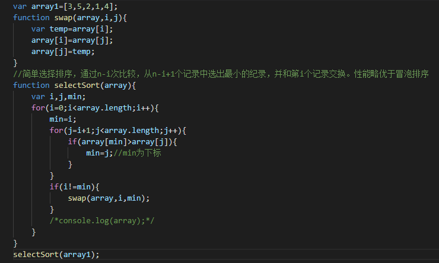
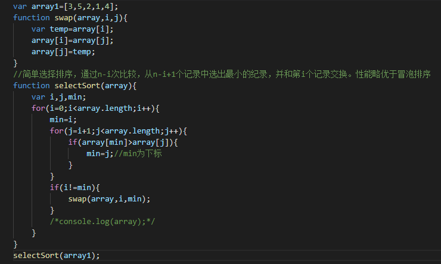

Sort
js常用排序算法
一：冒泡排序（时间复杂度：o（n^2））
二： 简单选择排序：（时间复杂度：o（n^2））

三：直接插入排序：（时间复杂度：o（n^2），性能优于冒泡和简单选择）
四：快速排序：（时间复杂度：o（nlogn））
五：归并排序（始终都是O(n log n）的时间复杂度，代价是需要额外的内存空间）
一：冒泡排序（时间复杂度：o（n^2））
二： 简单选择排序：（时间复杂度：o（n^2））

三：直接插入排序：（时间复杂度：o（n^2），性能优于冒泡和简单选择）
四：快速排序：（时间复杂度：o（nlogn））
五：归并排序（始终都是O(n log n）的时间复杂度，代价是需要额外的内存空间）